An inter-disciplinary, student–run, competitive engineering organization at Stony Brook University.
An engineering organization I was a part of where students work together to design, build, test, and race a full sized solar-powered boat. A majority of the systems on the vessel are produced in-house, such as drivetrains, composite molds, solar panels, hydrofoils, control systems, and various other mechanical/electrical devices.
The Team
Consisting of roughly 10-15 members, the solar boat team is relatively small compared to other engineering clubs of this type. However, the small group promotes the learning of skills outside one's specialty and often leads to members wearing multiple hats.
Mechanical Team
The primary function of the mechanical team is to design and manufacture the transmission for the boat. The system they create should be well integrated with the electrical components of the boat and should be designed in a way that does not require advanced manufacturing methods but that still meets the projected goals for that subsystem.
Electrical Team
The primary function of the electrical team is to integrate sensors, controllers, and panels to work under one system. The system they create should be capable of measuring physical variables such as boat RPM, vehicle speed, motor temperatures, battery voltage, etc.
Hull Design
The hull was fabricated completely from carbon fiber, with reinforcements of honeycomb foamboard and plywood. The hull consists of a honeycomb core with 3 carbon fiber layers on both sides. The deep V shape provided more stability to the boat and enhanced its performance during turns.
While this material gave us a huge advantage when it came to the overall weight (the hull weighed ~35 lbs.), the design worked against it during sprints due to increased drag and propeller backwash. This would eventually lead us to pursue a different hull design.
Mechanical Systems
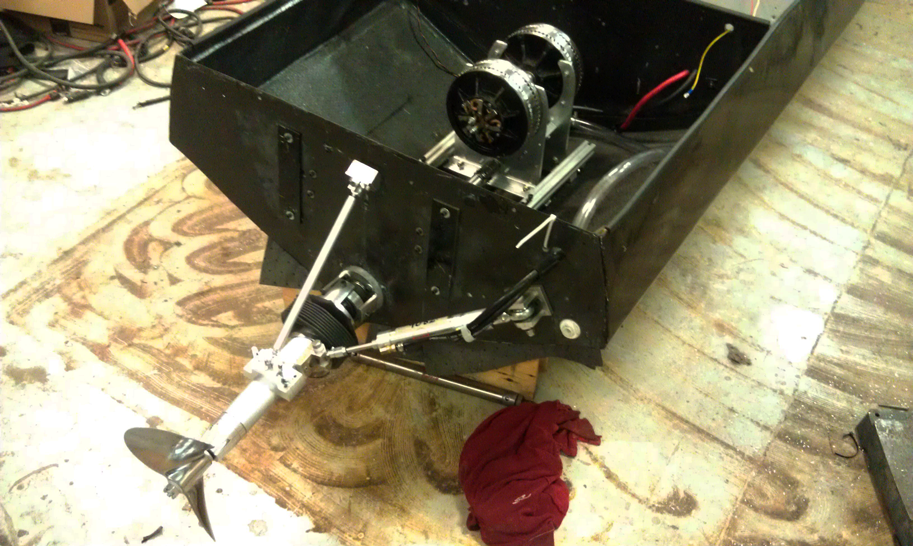The mechanical systems of the boat consisted of the drive train, propeller selection, coupling of motors, steering system, and boat assembly. Based on the success of the previous year’s performance, the Arneson drive train design was once again used, only with a shorter driveshaft. This design change was chosen to reduce weight, drag, and improve handling.
Drive Train
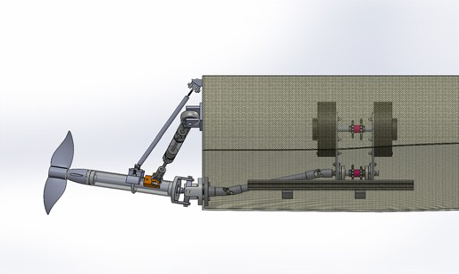The drivetrain design was based on the idea very similar to the Arneson surface driven system that is used on many race boats. This design appealed to the team since it was relatively simple and could reduce rotational inertia as well as handle large amounts of torque produced by motors. A dual gear ratio was implemented to accommodate the drastic change in performance between the endurance and sprint races.
Steering System
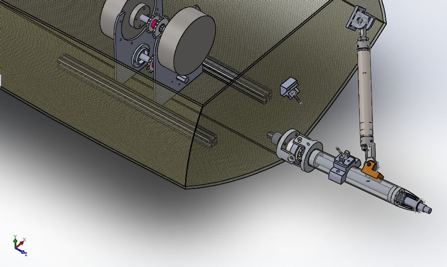The team opted for a similar design as the previous year with a hydraulic fluid reservoir, transmitting motion through a piston cylinder. The major advantage of using this design is that it does not require electrical power and is a relatively simple system to build and maintain.
Motors
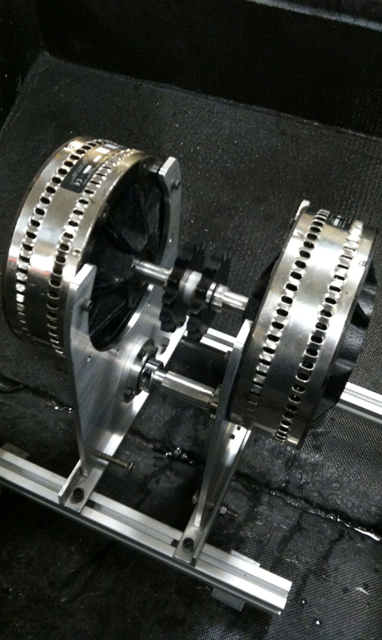Two Lynch Permanent Magnet (PM) DC brushed motors were used as the boats primary driving force. These motors are known for their lightweight and high efficiency and commonly used on electric powered vehicles.
Propeller
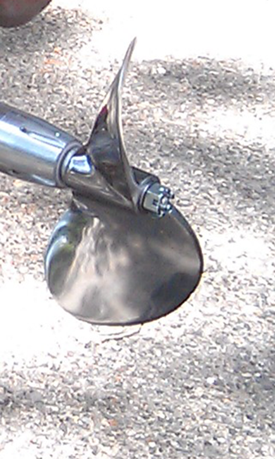A two-blade custom-made stainless steel solar boat propeller was used by the team to focus mainly on the endurance heat of the competition. However, this still functioned sufficiently during sprints.
Electrical Systems
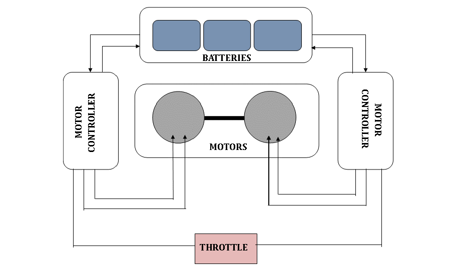The electrical systems of the boat consisted of power distribution from the solar panels to other subsystems, implementation of motor controllers, installation and battery configuration, and a tachometer and an LCD screen that would display specified feedback of data values.
Motor Controllers
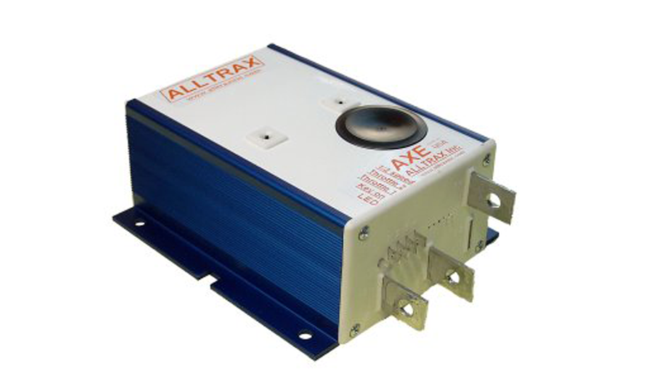Two new Alltrax motor controllers that each can draw 400 Amperes continuously were used in parallel to produce up to a total of 800 Amperes. These allowed for double the current than in previous years, but were to be used carefully as to not drain the batteries too quickly. However, the high limit gave the team room to use these motor controllers in future setups that may allow for such high currents.
Batteries
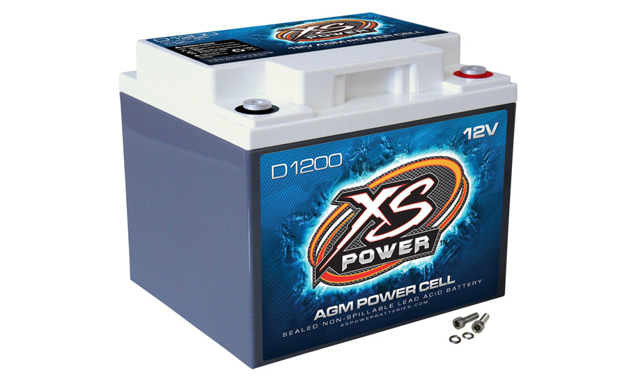D1200 AGM deep cycle batteries were used for the competition. Each battery weighed roughly 35 pounds and had a capacity of 44 Ampere hours, with a maximum current of 2600 Amperes. The sprint configuration consisted of three such batteries in series, making a system voltage of 36V and the endurance configuration made use of two such batteries, making the system voltage to 24V. The self-consumption current and voltage ratings were 20 mA and 9V, respectively, allowing for a low theoretical power loss from the solar panels of 0.18 Watts.
Solar Panels
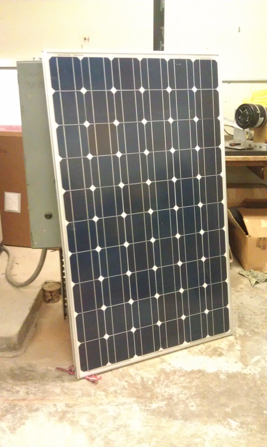Three commercial solar panels were connected in series to produce a total of 316 Watts of power. The panels worked in conjunction with a Tri-Star Maximum Power Point Tracking Solar Controller that was utilized to efficiently recharge the battery bank in the boat.
Concepts and Model Testing
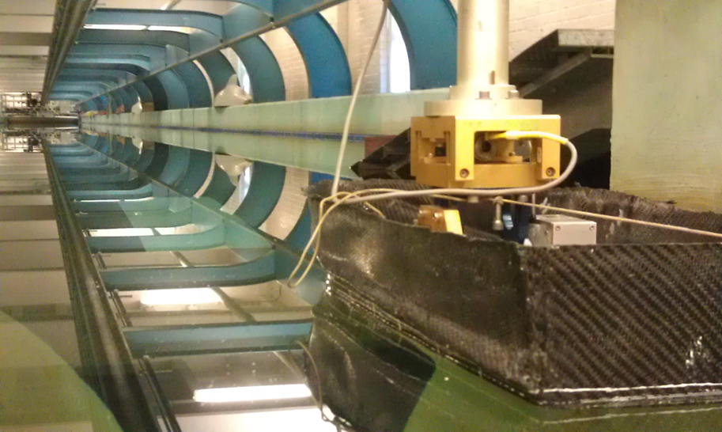By the 2013-2014 school year, the team had been using the carbon fiber hull for 2 years. Aware of the disadvantages the design posed, we decided to begin the process of designing a new hull for the following year. This involved a great deal of research, 3D design and flow testing, and ultimately the construction of scale models that would be tested in a towing tank at Stevens Institute of Technology in Hoboken, New Jersey.
Design and Simulation
The first step involved researching what types of hulls are most suitable for an electric boat running on two batteries and required both speed and maneuverability. Factors that contributed towards the designing of the hull were the weight of the boat, the maximum speed necessary to achieve planing, and stability. Computer Aided Design (CAD) software was utilized to build computer models of different hulls. The same software was utilized to run flow simulations to analyze water streamlines around the hulls and determine drag and lift. After running tests on several models, we chose the best two models based on the least drag and largest lift.
Construction

The hull cross sections were plotted on paper and then cut on pieces of MDF board. This, along with the wooden dowels holding the cross sections together, became the skeleton of the hull. We used Styrofoam to fill the voids in between the cross sections and used a custom built hot wire cutter to cut the foam more accurately. This created what is known as a plug.
A mold was made from the plug by first applying a layer of mold release and gel coat (to prevent direct adhesion to the plug) and then applying two layers of fiberglass with resin. When the fiberglass cured, the mold was detached from the plug and imperfections were sanded down or filled in. Woven carbon fiber was applied in layers with epoxy. Then the entire plug was encapsulated in a vacuum bag and all air was removed making the vacuum bag squeeze the carbon fiber layers together. After the curing of the epoxy, several layers of clear coat gel were applied on the carbon fiber to make it waterproof.
Tow Tank Testing
We were fortunate enough to collaborate with the Davidson Labs at Stevens Institute of Technology to utilize their 300ft tow tank. This provided us with more than enough space to test our models at different speeds and receive analytics immediately after each run.
During each run, a series of pictures was taken at predefined points in the tank allowing us to analyze the state of the hull. Results from the tests proved to be largely positive with our hull successfully planing, significantly reducing the amount of drag compared to the existing hull. While the planar design was achieved and worked, its exact shape still did not disburse water away from the hull at higher speeds leading to some additional drag and the potential for backwash. We were fortunate enough to receive tips from the operator of the tow tank on how this could be improved.
Fullscale Testing
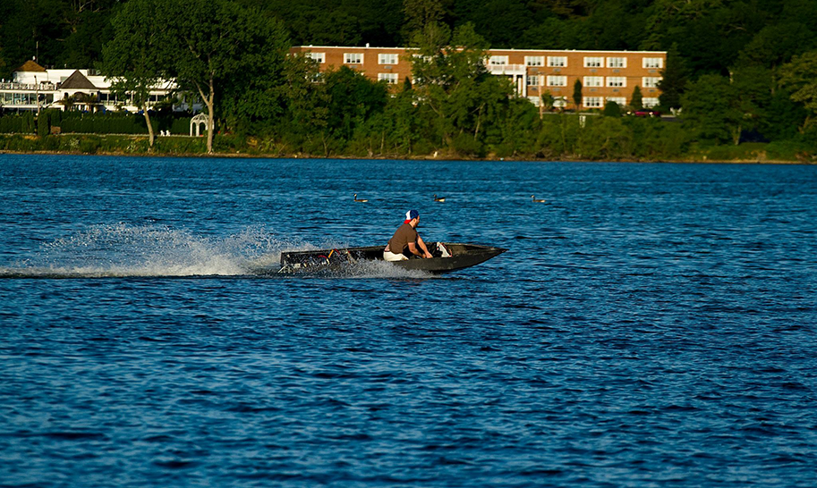With competition only a couple months away and the smallscale model testing finished for the year, the team headed to Lake Ronkonkoma to test out the latest mechanical and electrical systems.
Testing of the boat occurred over the course of two weekends to ensure consistency and allow for time to fix/repair any problem areas. A few alumni members came together to contribute to the hauling and tuning of the boat before and during the test. The first day of testing ended up being a disaster as one of the plastic spacers between the propeller and drive shaft had disintegrated during a motor test right before the boat was to enter the water. The following day and next weekend were successes however with the boat reaching a new top speed of 15 mph and cornering tighter than it ever has.
Competition
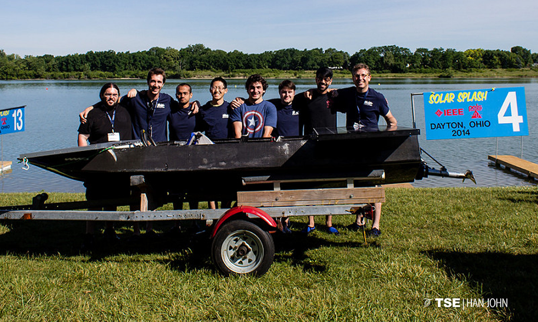The Solar Splash competition is the World Championship of intercollegiate Solar/Electric boating and takes place over the course of five days at a select location. The 2014 competition took place in Dayton, Ohio, home to the top contender in the Solar Splash competition, Cedarville University. The competition was split into 4 events: a qualifying race to determine the eligibility of the boat, a slalom that tests maneuverability and control, a 2 kilometer endurance race that tests the optimal use of solar powered 'trickle charging', and a 300 meter sprint that tests speed. In addition to the races, the team was graded on other aspects including the visual design of the boat, craftsmanship, and a previously submitted technical report.
The first days of the event were largely preliminary, focusing on inspection and qualifying rounds. By mid-week however, the competition was in full swing and the main events were live. Some of the boats competing this year were quite intimidating. Cedarville, who has one a majority of the competitions, had built a new hull with solar cells integrated into the actual hull and was sporting a new drive train. Middle Tennessee State had also brought their latest build which, without a keen eye, could be mistaken for a purchased, commercial vessel. While our boat certainly wasn't going to win the visual design award, it was far easier to maintain and performed more consistently than the others.
During the anticipated sprint and endurance races, both Cedarville and Middle Tennessee had suffered major malfunctions disqualifying them from the respective round. This cost them major points and by the time the final endurance race had finished (which we placed 3rd in), something interesting had happened; we had actually secured first place overall. Even if our boat was disqualified from the final sprint (also the final race of the event), we would have won. However, we were able to get second place in the final race giving us an even more comfortable lead. This first place win was a huge successes for the team and club as it was the first time in the university's history it had ever been achieved.
The Next Generation
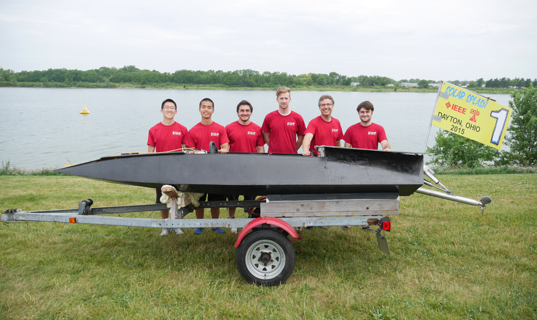The team for the following year was a mix of both existing members and new ones. With many of the core members from the previous year having graduated (including myself), the club was now in the hands of rising students. The success of the previous year had established Solar Boat as a serious club and gave sponsors and the university more confidence in the club leading to more funding, more resources, and more overall attention on campus.
Taking inspiration from the previous year's success, the new team had serious ambitions for the next competition. A new hull, inspired from the one that was tested at the Davidson Labs was crafted on site within a newly acquired workspace and a new drivetrain was manufactured that refined the design from the 2014 build. In addition to the new material elements of the club, more workshops were held to teach new students how to design components using CAD software and manufacture them using the machines in the shop.
The 2015 competition was once again held in Dayton, Ohio with many of the same teams making an appearance. This included the top competitors who returned with their superior crafted vessels. Unlike the previous year however, they did not suffer complications and dominated the competition. Unfortunately, the newer drive-train suffered mechanical issues as well leading to dramatically reduced speeds and even a malfunction during one of the sprints. The 2015 team placed 11th out of 12. As disheartening as the news was when I first heard it, it didn't overshadow the new direction the club had taken and all of the hard work the team had done for that year.
What I really appreciated about this project was how much the club had grown and how much each of us developed as engineers and people. Aside from the technical skills that come with any engineering position, taking part in the complete development process and wearing many hats helped not only to solidify my understanding of the development lifecycle and its nuances, but contributed to our appreciation for each other's respective area of interest. While I haven't stepped foot into the shop since 2014, I still keep up with some of the friends I made during my time there. You can check out how the teams doing over at Sbusolarracing.com.